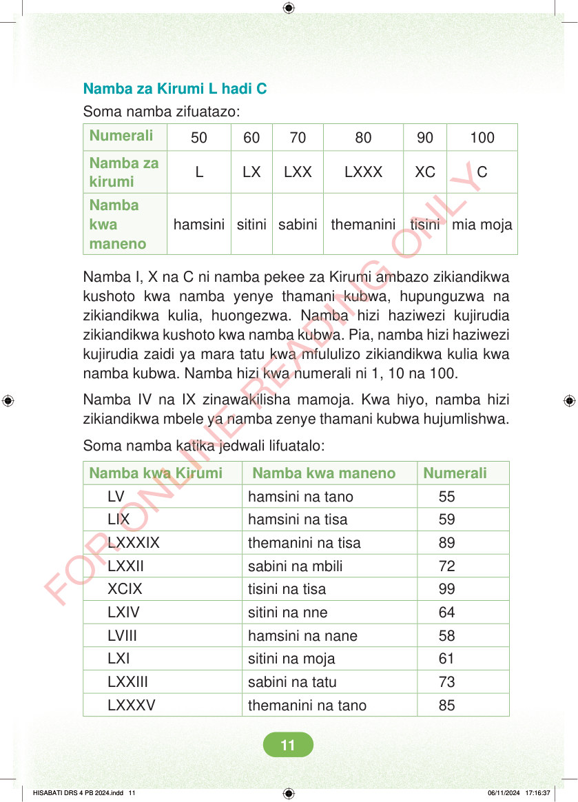

Namba za Kirumi L hadi C Soma namba zifuatazo: Numerali 50 60 70 80 90 100 Namba za kirumi L LX LXX LXXX XC C hamsini sitini sabini themanini tisini mia moja Namba kwa maneno Namba I, X na C ni namba pekee za Kirumi ambazo zikiandikwa kushoto kwa namba yenye thamani kubwa, hupunguzwa na zikiandikwa kulia, huongezwa. Namba hizi haziwezi kujirudia zikiandikwa kushoto kwa namba kubwa. Pia, namba hizi haziwezi kujirudia zaidi ya mara tatu kwa mfululizo zikiandikwa kulia kwa namba kubwa. Namba hizi kwa numerali ni 1, 10 na 100. Namba IV na IX zinawakilisha mamoja. Kwa hiyo, namba hizi zikiandikwa mbele ya namba zenye thamani kubwa hujumlishwa. Soma namba katika jedwali lifuatalo: Namba kwa Kirumi Namba kwa maneno Numerali LV hamsini na tano 55 LIX hamsini na tisa 59 LXXXIX themanini na tisa 89 LXXII sabini na mbili 72 XCIX tisini na tisa 99 LXIV sitini na nne 64 LVIII hamsini na nane 58 LXI sitini na moja 61 LXXIII sabini na tatu 73 LXXXV themanini na tano 85 HISABATI DRS 4 PB 2024.indd 11 HISABATI DRS 4 PB 2024.indd 11 06/11/2024 17:16:37 06/11/2024 17:16:37